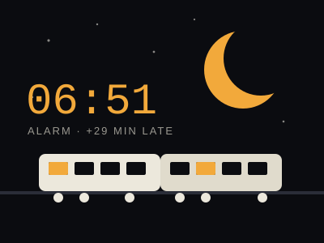
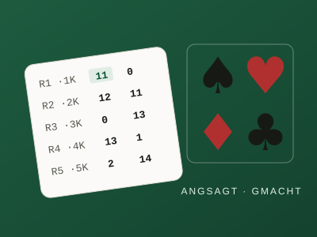

Side Quests
Things I built because I wanted them to exist: small, self-contained web apps that solve one everyday problem each. They run in the browser, store nothing on a server beyond what they need, and are free to use. Source code for everything is in one repository.
Apps

Arrive Awake
A train alarm that moves with your train. Fixed alarms fail on night trains: set for 06:00 because arrival is 06:30, and then the train runs two hours late. Arrive Awake wakes you a chosen number of minutes before the real, delay-adjusted arrival. It follows your train with live data (ÖBB and WESTbahn via a small backend, DB and SBB via Transitous), falls back to a GPS estimate where no live data exists, and can ring through a locked screen via push notifications.
Open app → How it works
Stechen-Schreiber
The score sheet for the card game Stechen. A bidding trick-taking game played in rounds of 1 to n cards and back down again, where the dealer may not bid the number that would make the bids add up. The app keeps the bids, tricks and points for up to eight players, enforces the dealer rule, auto-fills what follows from the other entries, draws the running score as a chart and hands out titles at the end. Started in 2022 as a Python script; now a single page that works offline and remembers the game in your browser.
Open app →All code is MIT-licensed. Arrive Awake uses timetable and live data from Transitous (OpenStreetMap contributors and the agencies listed there) and, for Austria, from the ÖBB Scotty backend through a self-hosted proxy.